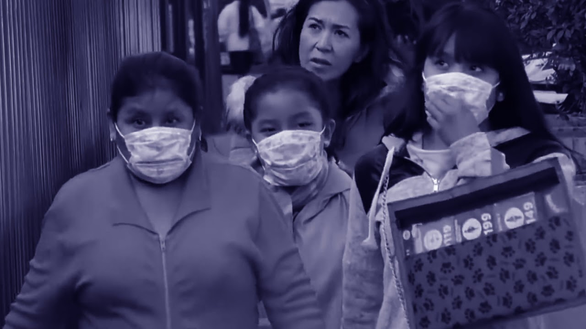
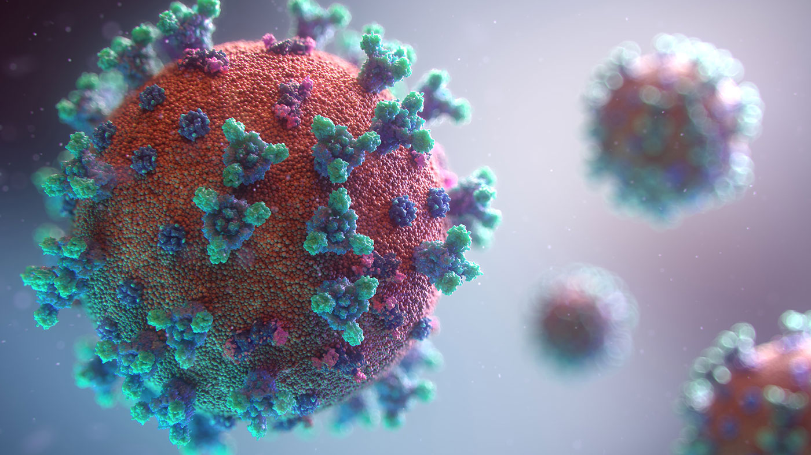
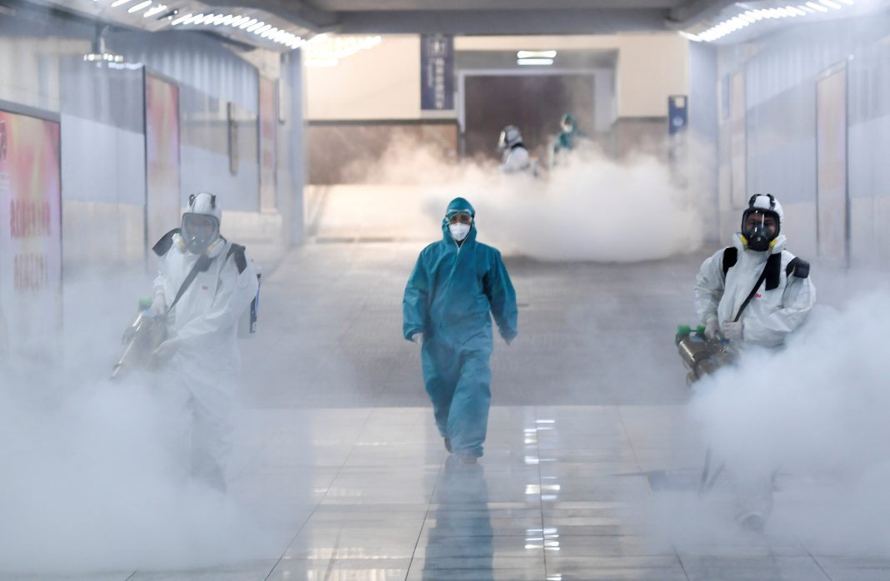

Con 5 mil 980 contagios y 463 defunciones por coronavirus en promedio al día, en lo que va de octubre se registra un alza en los casos y decesos ocurridos diariamente con respecto a septiembre, cuando se reportaron 4 mil 788 diagnósticos y 441 muertes.
Especialistas consultados por EL UNIVERSAL coincidieron en que estas cifras corresponden a un repunte, que es el término correcto que se debe usar en México, puesto que un rebrote sucede cuando se dejaron de registrar casos de una enfermedad y de pronto surgen pacientes, lo que no ocurrió en el país.
| Mala Terminología | Desaparece Temor por contagio | ¿Para dónde vamos? |
|---|---|---|
|
“Emplear el término rebrote es una equivocación, porque en realidad en el país nunca bajó la curva
 |

 "Parece que la gente le perdió el miedo a la enfermedad, las calles están llenas, hay un tráfico similar al que había antes de la Jornada Nacional de Sana Distancia, gente en restaurantes, en plazas, en el espacio público, vaya, y no hay que olvidar que estamos en pandemia, que esto no se ha acabado y si no nos cuidamos, no se acabará”, aseveró. |
“No se puede dejar de lado que la positividad no ha bajado significativamente de 35% y eso podría señalar un rebrote, la nueva subida hacia cifras de 38% y 40% de positividad o poco más, a la fecha, aumentó un punto porcentual, ya está en 42% y en el pico máximo llegó a 49%, ahí se puede apreciar más claramente el repunte de casos”, opinó.
María Luisa Ponce López, experta en salud pública y académica de la Universidad Autónoma Nacional de México (UNAM), señaló que es necesario que la sociedad haga equipo con el gobierno del presidente Andrés Manuel López Obrador y respete las medidas de sana distancia. “Seguramente regresar a un confinamiento es una idea que causa miedo, ansiedad, incertidumbre, por el tema económico, pero si como ciudadanos no queremos que esto pase, tenemos que acatar las medidas de higiene y sana distancia, no es que no se salga, sino que al hacerlo usemos cubrebocas, si nos subimos al transporte público evitar hablar, porque por sí mismas las acciones que implemente el gobierno no funcionarán”, destacó. |
| Sí hubo una disminución de casos, pero no lo suficiente, la meseta estuvo ahí y cuando se asomó una incidencia menor, bastaron unas semanas para que se incrementaran los casos”, dijo Carolina Gómez Vinales, maestra en salud pública por el Instituto Nacional de Salud Pública. | De acuerdo con los informes técnicos diarios que emite la Secretaría de Salud (Ssa), en lo que va de octubre se han contabilizado 130 mil 955 contagios por Covid-19, hasta el día 23, cifras similares a las de junio, cuando se reportaron 135 mil 425 infecciones. | Por último, Ponce López comentó que el gobierno debe pensar en un reconfinamiento como un último recurso, porque además sería más difícil que la sociedad lo respetara, por lo que llamó a que desde la administración pública se resalte la importancia de las medidas de higiene como el constante lavado de manos y la sana distancia. |
| La experta resaltó que en octubre de nuevo se reportó aumento en el número de casos nuevos por coronavirus al día, lo que a su parecer es consecuencia de la relajación de medidas sanitarias y de sana distancia. | Para que octubre iguale a septiembre en contagios hacen falta 6 mil 97 casos, es decir, que de aquí al próximo día 31 se tendrían que registrar 762 infecciones cada día, número inferior a los 5 mil o 6 mil que se han reportado diariamente. Cabe recordar que no son positivos que se diagnostiquen en 24 horas, sino que las autoridades sanitarias estatales los incluyeron en las bases de datos de la Secretaría de Salud en ese periodo. En ese sentido, Alejandro Macías, infectólogo excomisionado para la atención de la influenza en 2009 y actual integrante de la Comisión de la UNAM para la Atención del Coronavirus, mencionó que “el incremento en las tasas de incidencia que se están presentando en el país corresponden simple y sencillamente a un repunte, porque un rebrote es la reaparición de la enfermedad una vez que se había logrado un control; en el caso de México, lo que más aplicaría sería la designación de un repunte”, enfatizó. | “Reordenar un confinamiento es una medida extrema, no se descarta porque incluso en otros países ya se está haciendo, pero detener las actividades económicas y sociales puede generar problemas, más porque aún no se sale por completo del primer confinamiento, quizá no se respetaría, la gente está agotada, por ello lo mejor es destacar la necesidad de lavarse las manos o utilizar gel antibacterial, evitar lugares concurridos y, en caso de salir al espacio público, usar el tapabocas”, dijo la especialista. |